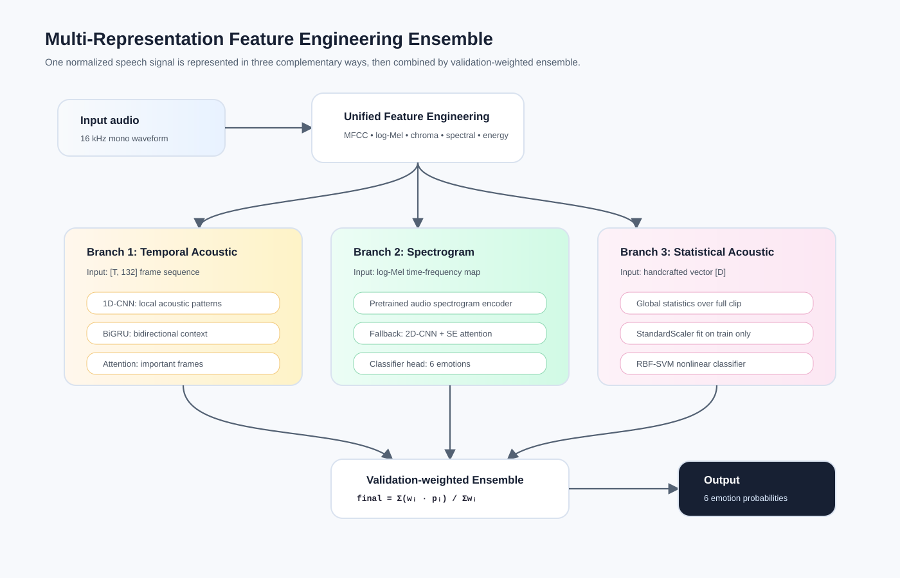
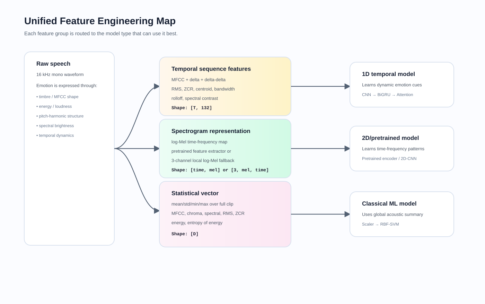
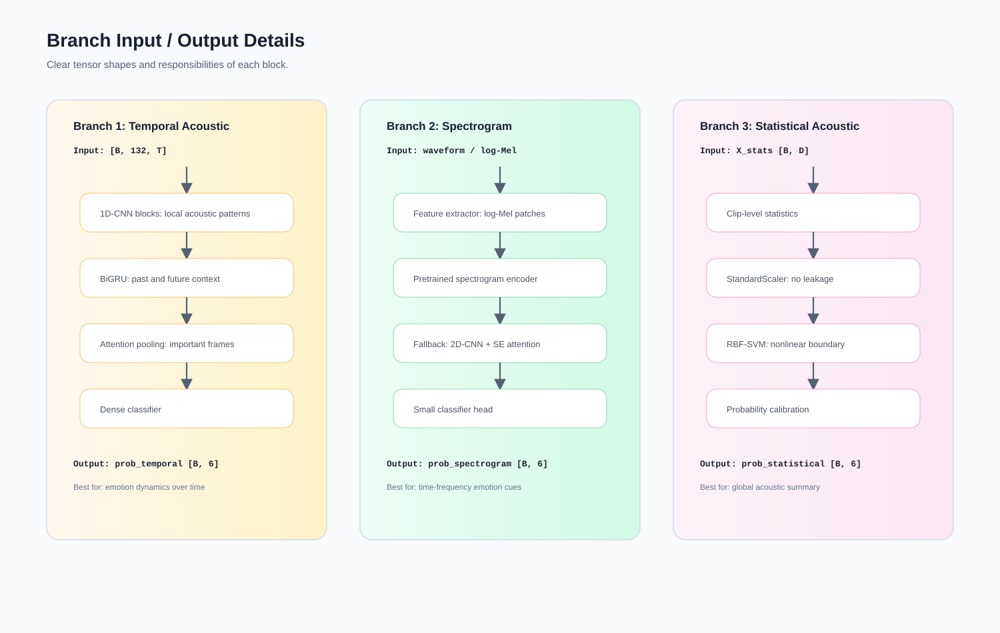
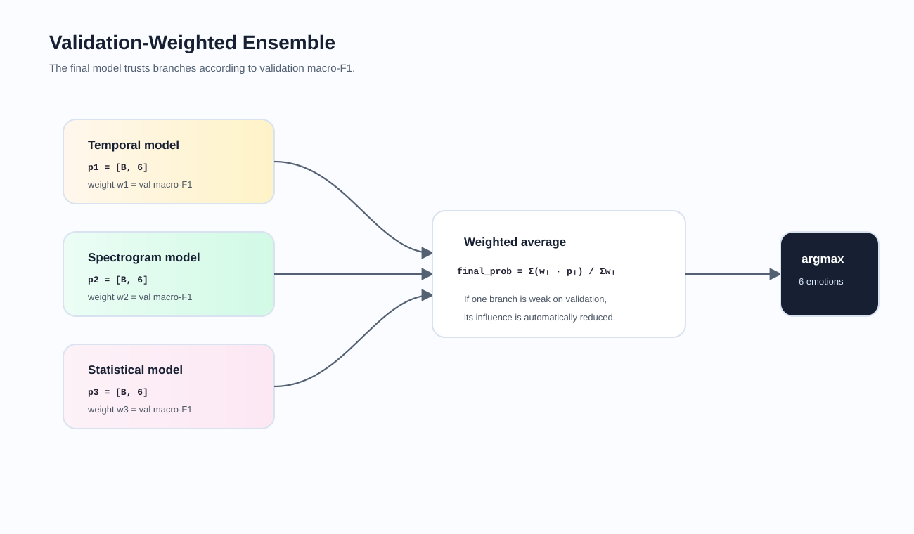

Multi-Representation Feature Engineering Ensemble
Kiến trúc nhận audio speech 16 kHz, trích xuất ba biểu diễn bổ sung cho nhau, train ba nhánh chuyên biệt và kết hợp dự đoán bằng validation-weighted ensemble.
Temporal branch
MFCC/delta/spectral sequence → 1D-CNN → BiGRU → attention.
Spectrogram branch
Log-Mel representation → pretrained spectrogram encoder hoặc fallback 2D-CNN + SE.
Statistical branch
Handcrafted acoustic statistics → StandardScaler → RBF-SVM.

Tổng quan pipeline từ audio đến ensemble output.

Bản đồ đặc trưng và lý do mỗi nhóm feature đi vào từng nhánh.

Input/output và nhiệm vụ của từng khối trong ba nhánh.

Cách validation macro-F1 điều chỉnh trọng số ensemble.